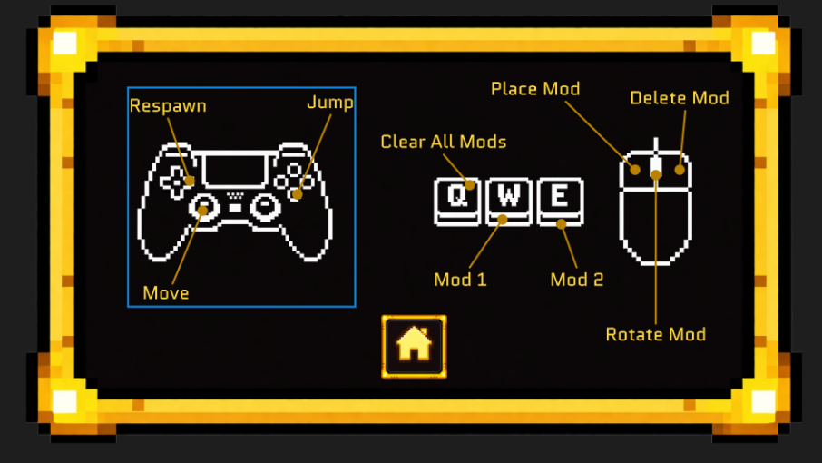
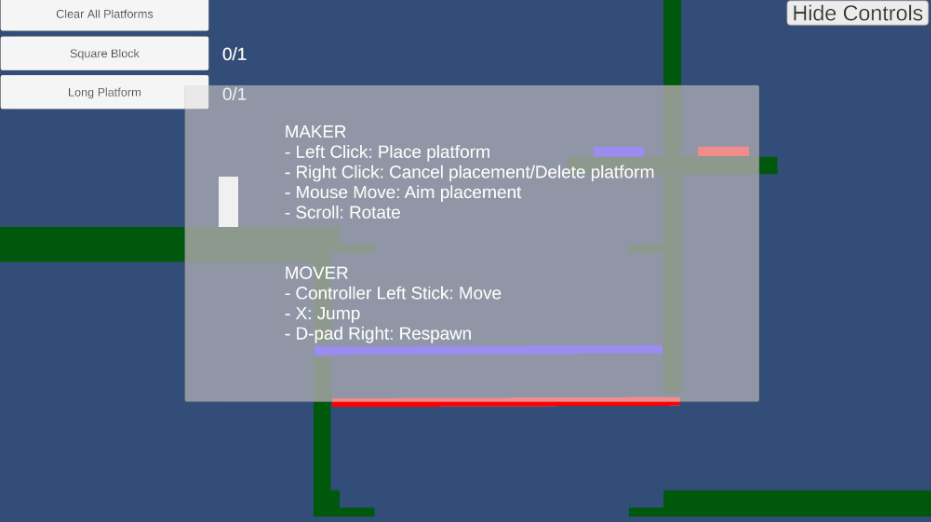
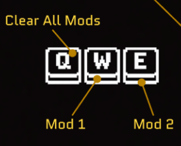
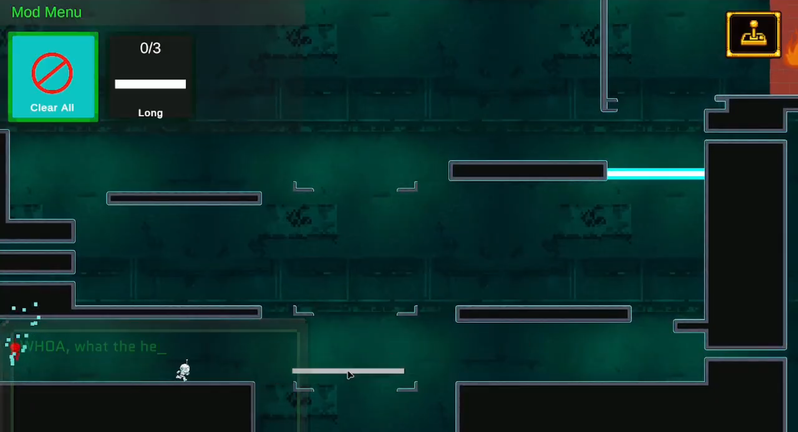
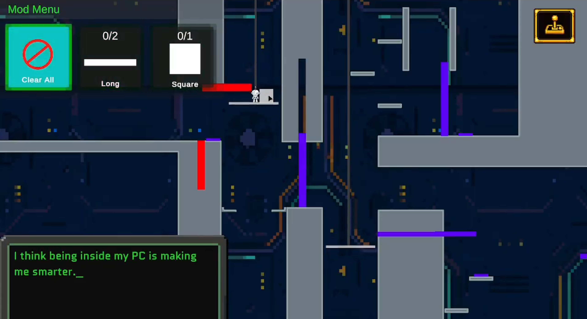
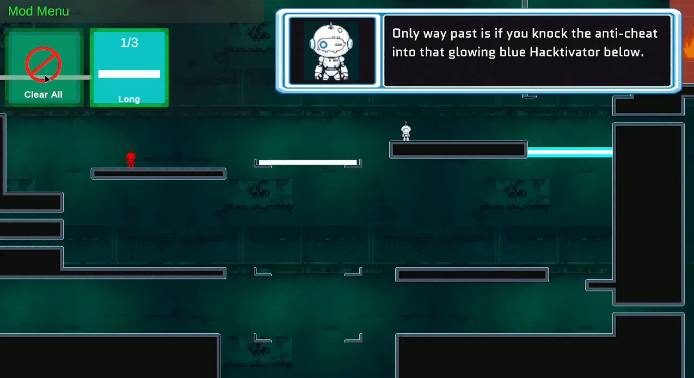
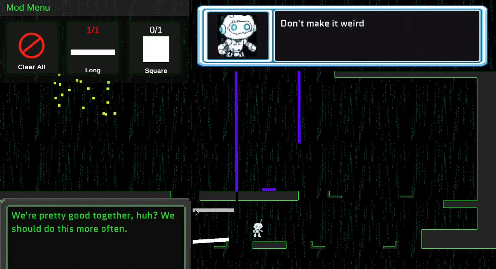
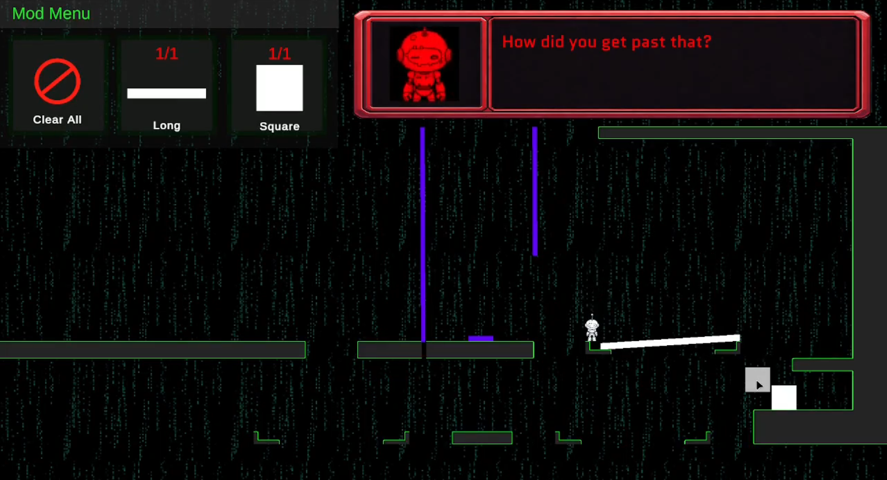

Movercontroller
- Moves left and right
- Jumps across platforms and hazards
- Activates checkpoints
- Navigates traversal and chase sequences
- Responds to paths created by the Maker
A two-player asymmetric cooperative puzzle-platformer. One player is the Mover, a self-aware character trying to escape a digital system; the other is the Maker, an outside operator who reshapes the world through a mod-style interface.
The game asks players to communicate constantly: the Mover navigates hazards, jumps through the level, and reaches checkpoints, while the Maker places, rotates, and deletes platforms to create paths and respond to threats in real time.
Hey, you. >> Huh? >> Yeah, you. Do you like puzzles? Do you like platformers? Do you like uh making stuff? Introducing. In this puzzle platforming game, your goal is to escape the game world by completing puzzles and reaching back doors in the game space. But you're not alone. This game is co-op. specifically half puzzler, half platformer. You will work together to get the video game character that doesn't belong here out of the level using special maker tools as long as the game's antiche doesn't stop us.
Oh, speaking of which So, what are you waiting for? >> Huh? >> Uh, yes. I'm still talking to you. Get your head in the game, then get out of the game.
Export to: Reality began with a design question: what if one player could manipulate the game world rather than directly controlling the character? Our team developed this into a shared-screen, asymmetric co-op platformer where each player has a different input device, responsibility, and perspective on the same challenge.
The game follows the Mover as they travel deeper into a computer system through three worlds: Desktop, Kernel, and Hardware. The Maker supports the escape from outside the game world by placing, rotating, and deleting platforms through a mouse-and-keyboard mod interface. The Anticheat system acts as the main threat, chasing the Mover and forcing both players to coordinate under pressure.
The two roles needed to feel genuinely interdependent rather than unequal. If the Maker handled every urgent decision, the Mover could feel passive; if the Maker only helped occasionally, the role could feel secondary. The challenge was to make both players active, legible, and useful throughout.

The early concept clearly separated movement from environmental manipulation, but this created two risks. The Maker could become overloaded during time-sensitive platforming and Anticheat chases; meanwhile the Mover could become too dependent on waiting for support instead of making meaningful decisions.
Playtesting also revealed players over-relied on platform placement after learning it in the tutorial. Even in later areas where jumping alone was enough, players kept placing platforms. The tutorial layout and environmental cues were unintentionally encouraging a narrow mental model.
How might we make each player's role feel active, understandable, and satisfying while keeping real-time cooperation clear under pressure?

The original loop relied heavily on the Maker placing platforms to help the Mover cross gaps and hazards. This established the central co-op relationship, but it also made the Maker responsible for many urgent decisions while the Mover's role could shrink to movement and jumping. During playtests, I watched not only what players said but where they hesitated, repeated behaviors, or misread affordances.
Players overused platform placement after learning it in the tutorial.
Some didn't grasp when a platform was necessary versus when a jump was enough.
The Maker experienced high pressure during chase sequences.
Small UI and control issues became more disruptive when players had to react quickly.
Gameplay objects and interactable elements needed stronger visual distinction.
Tune layouts and jump distances to guide players toward intended solutions, using physical constraints to signal when a specific action was required.
Give the Mover more to do. Pressure buttons, toggle systems, gates, and moving elements added meaningful responsibilities.
Speed up Maker actions. Keyboard hotkeys for selecting, placing, rotating, and deleting; larger interaction hitboxes for use under pressure.
Refine the Anticheat stun-and-chase loop so both players had active, complementary responsibilities.


The game needed a playful pixel-art identity without sacrificing readability. Backgrounds had to create atmosphere while letting players quickly tell platforms, hazards, interactive objects, and decoration apart.
Developed the pixel-art visual direction for the computer-system worlds.
Created early world sketches for the Desktop, Kernel, and Hardware layers.
Designed Mover character concepts, poses, and animation assets, plus level backgrounds reflecting each world's identity.
Refined visual hierarchy so background detail didn't compete with foreground gameplay, using colour, contrast, silhouette, and placement to guide attention.



The final game created a clearer, more balanced co-op loop. The Maker's actions became faster and more direct through hotkeys, clearer controls, and larger hit areas, while the Mover gained agency through pressure systems, toggle mechanics, gates, and environmental interactions. The final level structure connected platforming, manipulation, hazards, checkpoints, and chase sequences into shared moments of communication and timing, with visual hierarchy and physical leading helping players understand what to do next without relying on written instructions.
Maker interactions became more efficient under time pressure.
Mover actions became meaningful beyond basic movement and jumping.
Chase sequences required both players to coordinate actively.
Visual hierarchy and physical leading guided behavior through level structure, not excessive dialogue.

I also learned that small usability issues become amplified in high-pressure cooperative situations: an unclear control, a too-small hit area, or an easy-to-miss cue can quickly disrupt collaboration. Through playtesting and iteration, I learned to treat visual hierarchy, physical leading, and interface feedback as essential parts of the game system rather than surface-level polish.
Export to: Reality reflects my approach to interaction design: using systems thinking, visual communication, and iterative testing to make complex cooperative experiences feel thoughtful, playful, and clear.